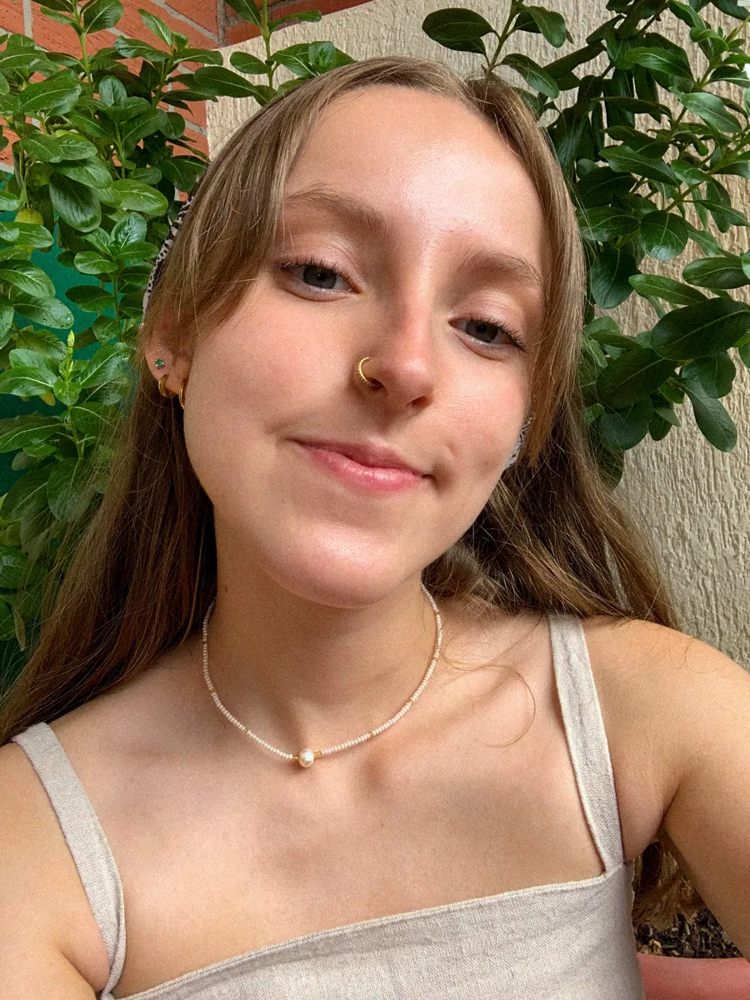

sobre nudo
Nudo es un espacio para explorar las posibilidades de la creación editorial. Nos interesa lo que ocurre entre una idea y su forma; las palabras, las imágenes, los materiales, las decisiones gráficas y las maneras de narrar.
Entendemos la edición como un proceso que va más allá de la publicación. Una forma de pensar, conectar y construir a partir de distintos lenguajes, en la que cada decisión participa en la manera de comunicar y experimentar una idea.
Por eso, trabajamos desde la exploración y el diálogo entre disciplinas, acompañando proyectos que encuentran en lo editorial una manera de desarrollarse, expresarse y relacionarse con el mundo.
nosotras
Las manos detrás del nudo.

Texto pendiente: una breve presentación de quienes forman nudo, su formación y cómo llegaron a la creación editorial.
contacto